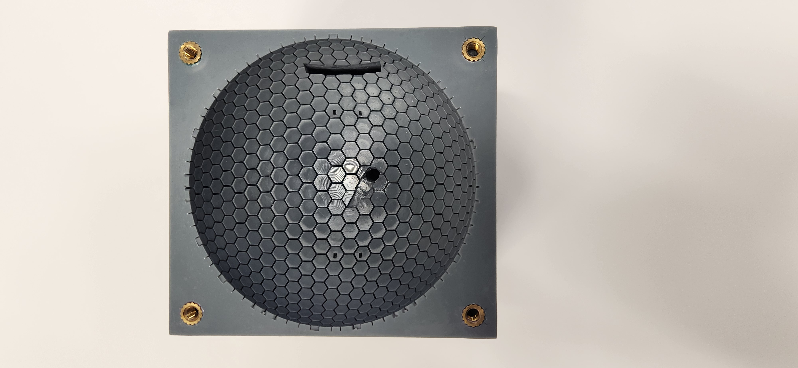
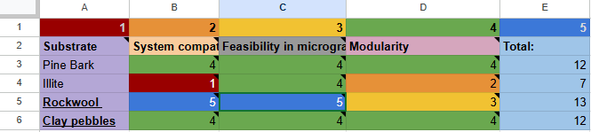
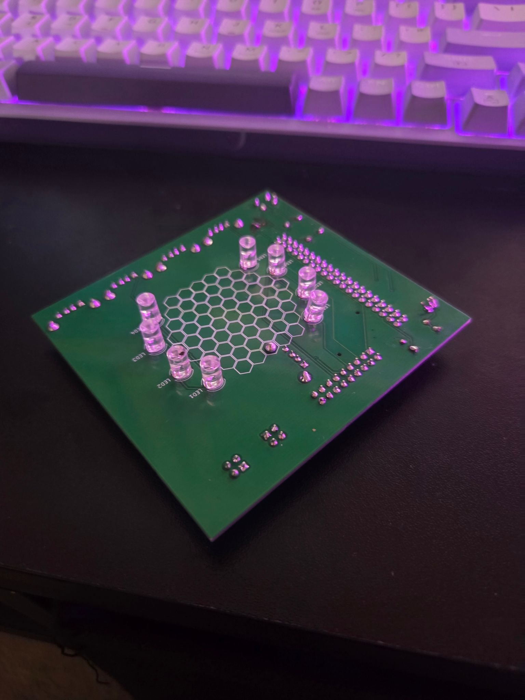
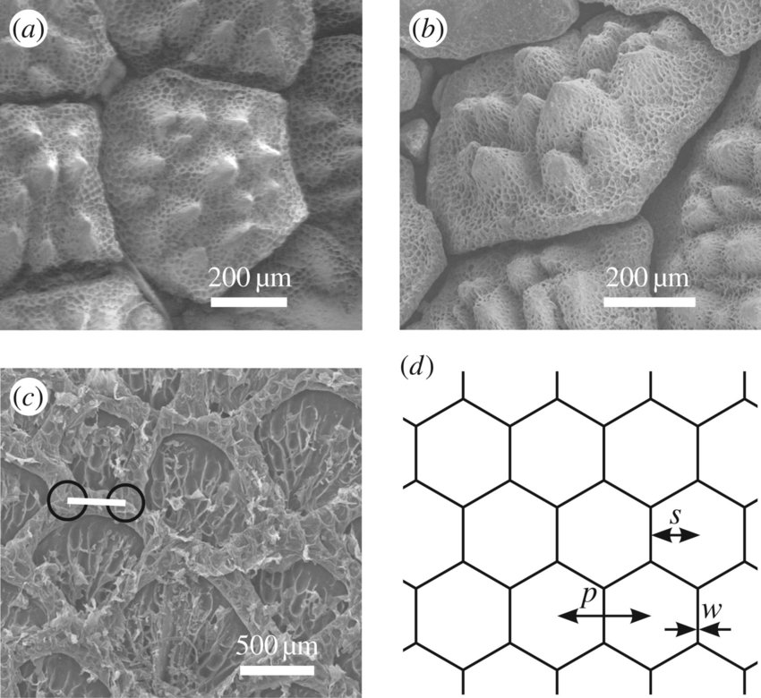
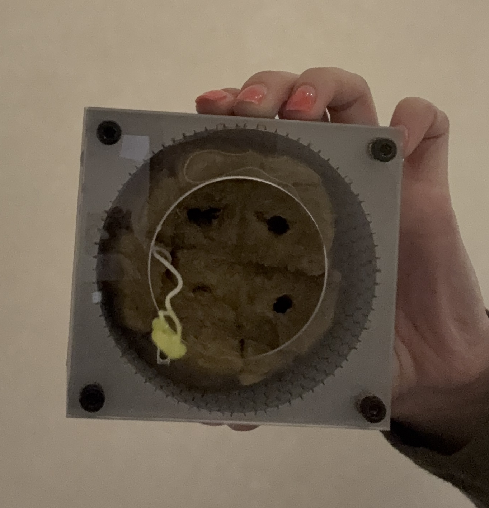
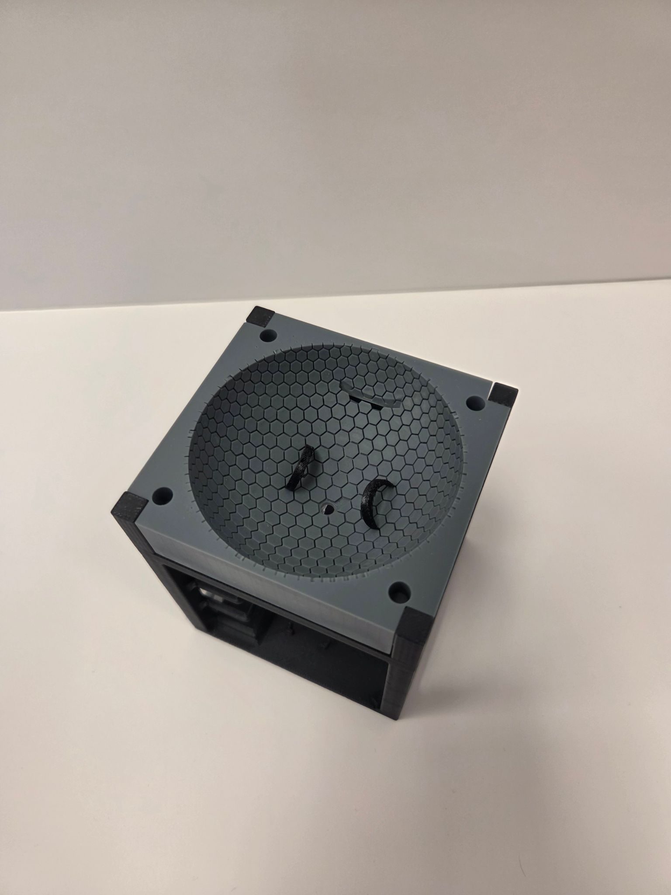
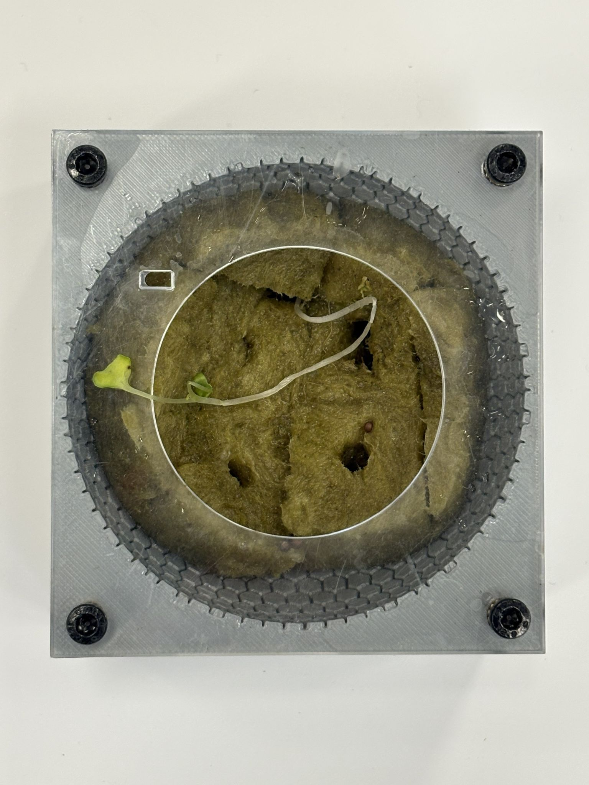

Kale kept dying
Clay pebbles and rockwool have to stay continuously damp, which is impractical in microgravity. Fix: thread the roots through the bottom of the rockwool so they reach the nutrient water directly.

Process · The Design Journey
Five students, one 2U box, a $100 budget, and a lizard that moves water with its skin. This is the full thought process, problem through research, design, build, test, and iteration. Every decision, dead end, and the reasoning behind it.
The printed TDC dome, seen from above. Photo: HexaFlow team.
The spine of the project
Scroll to walk the build in order. Each chapter is a date, a decision, and what it cost us. The deeper narrative for every phase sits on the paper slips tipped into each chapter.
Sept 2025
Problem · Phase 01
NASA HUNCH gave us the rules: a 2U nanolab (20×10×10 cm), 5 V USB-A power, a $100 budget, and a water supply that has to be entirely mechanical, no pumps-for-everything. The problem was bigger than “grow a plant in space”: study how fluids and plant substrates behave in microgravity, to help feed long-distance spaceflight. Condensation couldn’t touch the sensors, everything had to be modular, and it needed a web interface.
Led by Aidan, Project Manager & Hardware Lead
Phase 01 · Problem
The real goal was understanding how fluids and plant substrates behave in microgravity, a step toward feeding long-distance spaceflight. Plants were the means; the behavior of water in weightlessness was the subject. That framing shaped every choice that followed.
On Sept 2025, NASA HUNCH handed us the box we had to build inside. Condensation could not touch the sensors, everything had to be modular, and it needed a web interface. The water supply had to be entirely mechanical. No pumps-for-everything.
| Volume | 2U nanolab, 20 x 10 x 10 cm |
|---|---|
| Power | 5 V USB-A |
| Budget | $100 |
| Water | Entirely mechanical, no pumps-for-everything |
| Sensors | Condensation could not touch them |
| Form | Modular, with a web interface |
Sept–Oct 2025
Ideation · Phase 02
We reviewed NASA Veggie, the Advanced Plant Habitat, U-Michigan’s 3D-printed PLA substrate, MIT 2020 payloads, Astrobeat, and three patents. The gap was consistent: too big, not modular, water sources that drew power, not user-friendly. We pulled literature on capillary fluidics and soil-moisture sensors, and started logging everything in individual design notebooks (our “D.A.A.N.s”).
We emailed Dr. Gene Giacomelli, Dr. Murat Kacira, Robert Morrow, John Wetzel and Ariel Ekblaw. Not all of them wrote back, but the ones who did shaped the design.
Led by Nate, Correspondent & Water Movement Lead
Phase 02 · Ideation
We did not guess. We emailed the people who had done pieces of this before. Not all of them wrote back, but the ones who did shaped the design.
Oct 22, 2025
Ideation · The pivot
Eight substrates went into testing in October. Nearly all of them grew mould; only pine bark produced any growth at all. On 22 October the team abandoned growing media entirely and went aeroponic. Hydroponics looked promising until we realized it might make the project’s goal obsolete. Then Sabrina found the thorny devil lizard (Moloch horridus) on asknature.org: its grooved skin moves water by capillary action, no pump needed.
Nate prototyped the “Moloch Horridus Water System” in SolidWorks in two sizes. It worked “miraculously well,” so we renamed the core the TDC, Thorny-Devil Capillary.
Found by Sabrina, prototyped by Nate · Led by Nate, Water Movement Lead
The substrate photo is dated 20 Oct and 31 Oct on the image itself.
[Sabrina: 1 to 2 sentences, in your words, about finding the thorny devil on asknature.org]Note slot, to be written by SabrinaNov 18–19, 2025
Design · Phase 03
At Preliminary Design Review, NASA’s reviewer called the hexagonal shape and thorny-devil method “terrific.” The feedback that reshaped the build: reposition the camera to capture fluid dynamics, not plant growth (the test is too short to grow anything); use food coloring to see the water; add 1–2 containment layers; and test at least two substrates. Peer teams warned wicking doesn’t work in microgravity.
Led by Aidan, Project Manager & Hardware Lead
[Aidan: 1 to 2 sentences, in your words, about hearing “terrific” at Preliminary Design Review]Note slot, to be written by AidanDec 15, 2025
Design · Phase 03
We scored four substrates on system compatibility, microgravity feasibility, and modularity. Rockwool won: it screws into existing holes, its binding agent won’t escape into the channels, and water moves through it better in microgravity. Clay pebbles won as the second pick (11.5 mm pebbles can’t enter the 0.48 mm channels). Pine bark was rejected, because fragments would clog the channels. Illite was rejected, because the fine powder would escape and force a redesign.
Led by Sabrina, Note Taker & Substrate Lead
Phase 03 · Design
On Dec 15, 2025, we scored four substrates on system compatibility, microgravity feasibility, and modularity.
| Substrate | Verdict |
|---|---|
| Rockwool | Won. Screws into existing holes, its binding agent will not escape into the channels, and water moves through it better in microgravity. |
| Clay pebbles | Second pick. 11.5 mm pebbles cannot enter the 0.48 mm channels. |
| Pine bark | Rejected. Fragments would clog the channels. |
| Illite | Rejected. The fine powder would escape and force a redesign. |

Dec 2025–Feb 2026
Iterate · Phase 06
We iterated the enclosure seven times: wire holes 5 mm to 8 mm, walls 4 mm to 2 mm, door screws M3 16 mm to 4 mm, half-slotted modules that kept falling off the rails until we added supports. The reservoir became removable to stop moisture contaminating the electronics: a heat-sealed pouch in a friction-fit pocket.
Then our new resin printer’s VOCs shriveled the test plants overnight, a sharp lesson that emissions and biology don’t share a room. The kale kept dying, and the cause turned out to be the team’s own new resin printer, running unventilated in the same room. Both plants shriveled before anyone connected the two. Fix: move the plants, tent them, ventilate.
Led by Maddie, Scheduler & Modularity Lead
Prototyping milestones

Jan–Mar 2026
Test · Phase 05
We dropped the TDC from 14 feet, with dyed water, measuring the water radius before and after each drop: about 0.9 seconds of free-fall per drop, simulating NASA Glenn’s 2.2-second zero-gravity window we’re traveling to Ohio to test.
Two suites were run: six drops first, averaging about 9.9 mm of capillary movement; then nine more after the module was revised, averaging 14.7 mm, a 48% improvement. (The “9 drops” figure cited elsewhere refers to the revised Suite B.) Mean capillary movement reached 14.7 mm across the revised suite; the spread across the nine ran from 4.28 mm to 31.79 mm.
We built up in three stages: bare module, then module plus camera, then the full nanolab with pump, sensors, and a web UI recording the whole thing. We couldn’t get a microgravity simulation running in software, and keeping a plant alive in physical substrates was “almost definitely user error.”
We stopped trusting the sim and started dropping the real thing.
Led by Nate, Correspondent & Water Movement Lead · Drop Testing at NASA Glenn, frame by frame
Phase 05 · Test
14.7mm
Mean capillary rise
revised Suite B
9
Free-fall drops
Suite B
48%
Improvement
Suite A to Suite B
0.9s
Free fall per drop
14 ft rig
Feb 9, 2026
Iterate · Phase 06
A later learning (Feb 9): clay pebbles and rockwool must stay continuously damp to wick water, impractical in microgravity, where wetting is intermittent at best. The team’s fix was to thread the roots through the bottom of the rockwool so they reach the nutrient water directly, sidestepping the wicking problem entirely.
Takeaway: the substrate anchors the plant and is part of the water-delivery path. Routing roots through its base lets the rockwool support the stem while the roots drink straight from the reservoir.
Led by Sabrina, Note Taker & Substrate Lead
[Sabrina: 1 to 2 sentences, in your words, about the kale and the roots-through-rockwool fix]Note slot, to be written by SabrinaSpring 2026
Build · Phase 04
By Critical Design Review the system was whole: TDC capillary channels, dual pumps (1 mL/min for the long term, 100 mL/min for the drop test), a Raspberry Pi Zero 2W running an AI vision model, aeroponics plus rockwool and clay pebbles, and a modular shelf enclosure. The vision model reads root moisture and waters only when the roots are dry, a continuous feedback loop that eliminates root rot.
The honest open items: a custom PCB to replace the wiring, waterproofing, and a live-plant run. A geometry problem caught only at assembly: the Atlas Scientific pH probe is 153 mm; we had 47 mm of clearance. The kind of thing that only shows up when you build it.
Led by Aidan, Project Manager & Hardware Lead
Phase 04 · Build
A custom carrier board consolidated the electronics onto one board: Raspberry Pi, a 4-camera hub, direct ADC, and power breakouts, which simplified wiring for reliability.
The Atlas Scientific pH probe is 153 mm. We had 47 mm of clearance. A geometry problem that only shows up when you build it, not when you model it.










HexaFlow build log · Design Journeyclosing page
Every failure below became a design decision. That is the loop: build the thing, drop it, measure, and listen when the result disagrees with the model.
Clay pebbles and rockwool have to stay continuously damp, which is impractical in microgravity. Fix: thread the roots through the bottom of the rockwool so they reach the nutrient water directly.
Our new resin printer shared an unventilated room with the test plants, and its VOCs shriveled them overnight. Fix: move the plants, tent them, ventilate. Emissions and biology do not mix.
The Atlas Scientific pH probe is 153 mm, and we had 47 mm of clearance. A geometry problem we caught only at assembly, the kind of thing that only shows up when you build it.
We could not get a microgravity simulation running in software, and keeping a plant alive in physical substrates was “almost definitely user error.” We stopped trusting the sim and started dropping the real thing.
The process that worked differed from the one we planned: we stopped trusting the simulation, built the real thing, and let nine drops of dyed water from 14 feet tell us what the model could not. Seven months, seven enclosure shells, fifteen drops, and one lizard. That is HexaFlow.
| Chapter | Led by |
|---|---|
| 01 Define the box | Aidan, Project Manager & Hardware Lead |
| 02 Read everything | Nate, Correspondent & Water Movement Lead |
| 03 The thorny devil | Nate, Water Movement Lead (found by Sabrina) |
| 04 Preliminary Design Review | Aidan, Project Manager |
| 05 Choosing substrates | Sabrina, Substrate Lead |
| 06 Seven shells | Maddie, Modularity Lead |
| 07 Drop, measure, repeat | Nate, Water Movement Lead |
| 08 Roots through rockwool | Sabrina, Substrate Lead |
| 09 The vision model | Aidan, Hardware Lead |
| This website | Lucas, Web Development Lead |